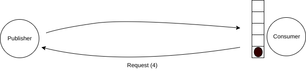
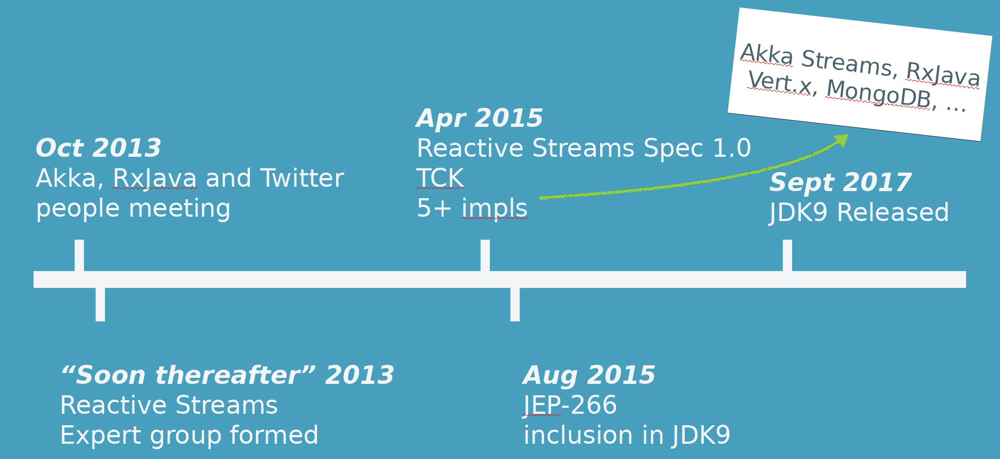
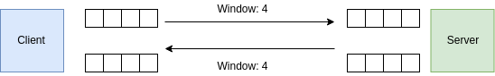
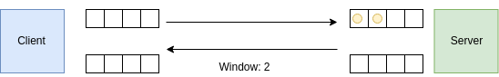
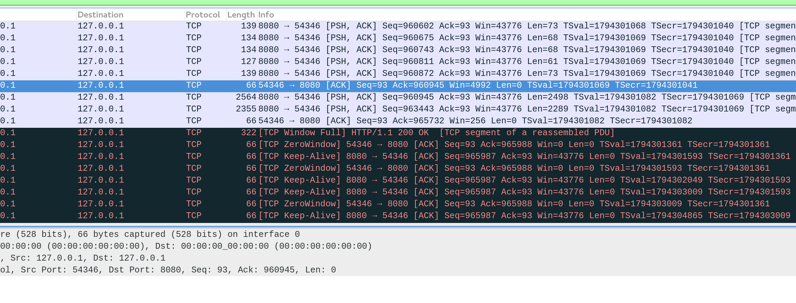
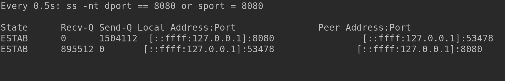

Responsive, back-pressured services with Akka
Christopher Batey
@chbatey
Akka toolkit
Actor model
Clustering
Persistence (Event Sourcing)
HTTP
Streams
Responsive
- For a single request
- Remain responsive under load
Scalable
- Single process scalability or resource efficiency
- Multi node scalability
Asynchronous
- Programming model
- CompletableFuture from the JDK
- Scala Futures
- Actors and Streams from Akka
- Observables and Flowables from RxJava
- Network/IO
- Network request use a Thread?
- File system request use a Thread?
Back pressure
- Fast producers overload slow consumers?
- How is demand signalled?
- Rate of pulling data into memory from database?
Presentation take aways
- What does async give us?
- What does flow control give us?
- What is the reactive streams specification?
- Flow control with Akka streams
- Http Client -> TCP -> Http Server -> TCP -> Apache Cassandra (slow client)
Use case
- HTTP Service, endpoints for:
- User information from database
- Getting user activity over a large time span
Requirements
- Respond in a timely manner, even if it is a failure
- Don’t do any unnecessary work
- Constant memory footprint
Execution Models
Traditional synchronous model
class MyService {
public Result performTask(Task task) throws Exception {
// ... do work
}
}for (Task task: tasks) {
Result result = service.performTask(task);
// Handle result...
}Asynchronous actor approach
static class MyActor extends AbstractActor {
@Override
public Receive createReceive() {
return receiveBuilder()
.match(Task.class, task -> { /* do work */ })
.build();
}
}for (Task task: tasks) {
actor.tell(task, noSender());
}class MyActor extends Actor {
override def receive = {
case Task(/*params*/) ⇒ /* do work */
}
}for (task <- tasks) {
actor ! task
}def post(request: HttpRequest): HttpResponse = {
val userId = request.getQueryParam("userId")
val user: User = getUserFromDatabase(userId)
ExternalService.sendPresentToUser(user)
HttpResponse(200)
}HttpResponse post(HttpRequest request) {
String userId = request.getQueryParam("userId");
Domain.User user = getUserFromDatabase(userId);
ExternalService.sendPresentToUser(user);
return new HttpResponse(200);
}def post(request: HttpRequest): HttpResponse = {
// nice and quick
val userId = request.getQueryParam("userId")
// 5 millis to 10 seconds?
val user: User = getUserFromDatabase(userId)
// 5 millis to 10 seconds?
ExternalService.sendPresentToUser(user)
HttpResponse(200)
}private HttpResponse post(HttpRequest request) {
// nice and quick
String userId = request.getQueryParam("userId");
// 5 millis to 10 seconds?
Domain.User user = getUserFromDatabase(userId);
// 5 millis to 10 seconds?
ExternalService.sendPresentToUser(user);
return new HttpResponse(200);
}Asynchronous
def request(request: HttpRequest): Future[HttpResponse] = ???CompletableFuture<HttpResponse> post(HttpRequest request)- Timeout independent to dependency times
- Option not to block on IO
- Works well for small responses that are ready to go
def request(request: HttpRequest): Future[HttpResponse] =
for {
user <- lookupUser(request.getQueryParam("userId"))
_ <- AsyncExternalService.sendPresentToUser(user)
} yield HttpResponse(200)CompletableFuture<HttpResponse> request(HttpRequest request) {
return wf.lookupUser(request.getQueryParam("id"))
.thenCompose(user -> wf.sendPresentToUser(user))
.thenApply(v -> new HttpResponse(200));
}Akka HTTP
path("user" / Segment) { name =>
get {
withRequestTimeout(500.millis) {
val user: Future[Option[User]] = DataAccess.lookupUser(name)
onComplete(user) {
case Success(None) => complete(StatusCodes.NotFound)
case Success(Some(u)) => complete(u)
case Failure(t) => complete(StatusCodes.InternalServerError, t.getMessage)
}
}
}
}get(() -> {
CompletableFuture<Optional<User>> user =
dataAccess.lookupUser(id);
return onSuccess(user, (Optional<User> opUser) ->
opUser.map(u -> complete(u.serialise()))
.orElse(complete(StatusCodes.NOT_FOUND)));
}Akka HTTP
path("user" / Segment) { name =>
get {
withRequestTimeout(500.millis) {
val user: Future[Option[User]] = DataAccess.lookupUser(name)
onComplete(user) {
case Success(None) => complete(StatusCodes.NotFound)
case Success(Some(u)) => complete(u)
case Failure(t) => complete(StatusCodes.InternalServerError, t.getMessage)
}
}
}
}def lookupUser(userId: UserId): Future[Option[User]] =
session.executeAsync("select * from users where user_id = ?", userId).asScala
.map((rs: ResultSet) => Option(rs.one())
.map(row => User(
row.getString("user_id"),
row.getString("user_name"),
row.getInt("age"))))CompletableFuture<Optional<User>> lookupUser(String userId) {
CompletableFuture<ResultSet> rs = toCompletableFuture(
session.executeAsync(CQL, userId));
CompletableFuture<Optional<User>> user =
rs.thenApply((ResultSet rSet) ->
Optional.ofNullable(rSet.one())
.map((Row row) -> new User(
row.getString("user_id"),
row.getString("user_name"),
row.getInt("age")))
);
return user;
}
Responsiveness under load
Playing fair
OutOfMemoryError
Queueing and/or buffering
- How would this work if Kafka was between the services?
Fast publisher
- Without the queue:
- Down stream gets overwhelmed
- Publisher has wasted resources
Reacting to failure
- Is the consumer slow or down?
- Circuit breakers

Flow control
- Dynamically adjust the rate based on demand

Reactive Streams
So far the good news…
static class MyActor extends AbstractActor {
@Override
public Receive createReceive() {
return receiveBuilder()
.match(Task.class, task -> { /* do work */ })
.build();
}
}for (Task task: tasks) {
actor.tell(task, noSender());
}class MyActor extends Actor {
override def receive = {
case Task(/*params*/) ⇒ /* do work */
}
}for (task <- tasks) {
actor ! task
}Reactive Streams Timeline

Reactive Streams Scope
Reactive Streams is an initiative to provide a standard for asynchronous stream processing with non-blocking back pressure. This encompasses efforts aimed at runtime environments (JVM and JavaScript) as well as network protocols
java.util.concurrent.Flow
public interface Publisher<T> {
public void subscribe(Subscriber<? super T> s);
}public interface Subscriber<T> {
public void onSubscribe(Subscription s);
public void onNext(T t);
public void onError(Throwable t);
public void onComplete();
}public interface Subscription {
public void request(long n);
public void cancel();
}public interface Processor<T, R> extends Subscriber<T>, Publisher<R> {
}Availablility
Included in JDK9
No JDK9? No problem!
<dependency>
<groupId>org.reactivestreams</groupId>
<artifactId>reactive-streams</artifactId>
<version>1.0.2</version>
</dependency>
Akka Streams

Source.range(0, 20000000);Flow.fromFunction(n -> n.toString());Sink.foreach(str -> System.out.println(str));Source<Integer, NotUsed> source =
Source.range(0, 20000000);Flow<Integer, String, NotUsed> flow =
Flow.fromFunction(n -> n.toString());Sink<String, CompletionStage<Done>> sink =
Sink.foreach(str -> System.out.println(str));RunnableGraph<NotUsed> runnable =
source.via(flow).to(sink);ActorSystem system = ActorSystem.create();
Materializer materializer = ActorMaterializer.create(system);
runnable.run(materializer);val source = Source(0 to 20000000)val flow = Flow[Int].map(_.toString())val sink = Sink.foreach[String](println(_))val runnable = source.via(flow).to(sink)implicit val system = ActorSystem()
implicit val mat = ActorMaterializer()
runnable.run()Java:
Source.range(0, 20000000)
.map(Object::toString)
.runForeach(System.out::println, materializer);Scala:
Source(0 to 20000000)
.map(_.toString)
.runForeach(println)Materialization
RunnableGraph<NotUsed> graph = Source.range(0, 20000000)
.map(Object::toString)
.to(Sink.foreach(str -> System.out.println(str)));
ActorSystem system = ActorSystem.create();
Materializer materializer = ActorMaterializer.create(system);
NotUsed n1 = graph.run(materializer);
NotUsed n2 = graph.run(materializer);val graph = Source(0 to 20000000)
.map(_.toString)
.to(Sink.foreach(println))
implicit val system = ActorSystem()
implicit val materializer = ActorMaterializer()
val n1: NotUsed = graph.run()
val n2: NotUsed = graph.run()Actor materialization
Source.range(1, 3)
.map(x -> x + 1)
.map(x -> x * 2)
.to(Sink.reduce((x, y) -> x + y));Source(1 to 3)
.map(x => x + 1)
.map(x => x * 2)
.to(Sink.reduce[Int](_ + _))
Fusing
Source.range(1, 3)
.map(x -> x + 1).async()
.map(x -> x * 2)
.to(Sink.reduce((x, y) -> x + y));Source(1 to 3)
.map(x => x + 1).async
.map(x => x * 2)
.to(Sink.reduce[Int](_ + _))Fusing
Source.range(1, 3)
.map(x -> x + 1)
.mapAsync(5, n -> CompletableFuture.completedFuture(n * 2))
.to(Sink.reduce((x, y) -> x + y));Source(1 to 3)
.map(x => x + 1)
.mapAsync(5)(n => Future.successful(n * 2))
.to(Sink.reduce[Int](_ + _))Backpressure propagation
Demand is signalled across async boundaries
Backpressure propagation
Thanks to Reactive Streams, across different libraries:
Backpressure propagation
Often also possible across external protocols, i.e. TCP:


Backpressure propagation
Can be seen in e.g. wireshark:

TCP windowing

Putting it all together
HTTP Client -> TCP -> Server -> HTTP Server -> TCP -> Apache Cassandra
Putting it all together
- Akka HTTP client
- Akka HTTP server
- Alpakka
Akka Client
val response: Future[HttpResponse] = Http().singleRequest(
HttpRequest(uri = s"http://localhost:8080/user/tracking/$userId")
)response.map {
case HttpResponse(StatusCodes.OK, headers, entity, _) =>
val response: Source[ByteString, _] = entity.dataBytes
response.via(Framing.delimiter(
ByteString("\n"), maximumFrameLength = 100, allowTruncation = true))
.map(_.utf8String.parseJson.convertTo[Event])
.mapMaterializedValue(_ => NotUsed)
}val response: Future[HttpResponse] = Http().singleRequest(
HttpRequest(uri = s"http://localhost:8080/user/tracking/$userId")
)response.map {
case HttpResponse(StatusCodes.OK, headers, entity, _) =>
val response: Source[ByteString, _] = entity.dataBytes
response.via(Framing.delimiter(
ByteString("\n"), maximumFrameLength = 100, allowTruncation = true))
.map(_.utf8String.parseJson.convertTo[Event])
.mapMaterializedValue(_ => NotUsed)
}Akka Server
val bound: Future[Http.ServerBinding] =
Http().bindAndHandle(route, "localhost", 8080)
def bindAndHandle(
handler: Flow[HttpRequest, HttpResponse, Any],
interface: String,
port: Int)
Akka Server
val streamingRoute = path("user" / "tracking" / Segment) { name: String =>
val source: Source[Event, NotUsed] =
DataAccess.lookupEvents(name)
val asJson: Source[ByteString, NotUsed] = source.map(e =>
ByteString(s"${e.toJson.toString()}\n",
StandardCharsets.UTF_8))
complete(HttpEntity(ContentTypes.`application/json`, asJson))
}val streamingRoute = path("user" / "tracking" / Segment) { name: String =>
val source: Source[Event, NotUsed] =
DataAccess.lookupEvents(name)
val asJson: Source[ByteString, NotUsed] = source.map(e =>
ByteString(s"${e.toJson.toString()}\n",
StandardCharsets.UTF_8))
complete(HttpEntity(ContentTypes.`application/json`, asJson))
}Cassandra Source
CassandraSource(new SimpleStatement(
"select * from user_tracking where user_id = ?", userId))(session)
.map(row => Event(
row.getString("user_id"),
UUIDs.unixTimestamp(row.getUUID("time")),
row.getString("event")))
Demo time
Demo summary
- HTTP slow client
- Client makes request for a large payload
- TCP buffers fill up
- Server stops getting data from database
- Client then demands more
- Everything starts flowing
Happy hAkking!
- Slides & Code
- github.com/chbatey/akka-streams-flow-control-example
- Docs & QuickStarts
- akka.io, developer.lightbend.com/start
- Community
- gitter.im/akka/akka
- Tweet
- @akkateam, @chbatey
Questions?
Java